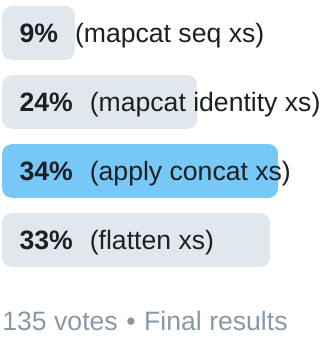

apply concat and friends
We begin with these electrifying words from a sage of Clojure:
Just realized that (mapcat seq x) is a pleasant alternative to (apply concat x). #clojure
— Christophe Grand (@cgrand) September 6, 2012
I have been an unquestioning fan of mapcat seq ever since. So I
was startled find that not only do most people disagree with me, but many perfer
a rather dangerous alternative!
But before we get into all the alternatives, what is this apply
concat that Christophe uses as his foil?
(apply concat xs)
Here's an example of what apply concat can do:
(apply concat [[1 2 3] [4 5 6] [7 8 9]]) ;=> (1 2 3 4 5 6 7 8 9)
This is a way to remove one layer of nesting in a sequence of sequences. I
think it's comfortable for people because concat is already very
close to what we want, and apply is straightforward for getting the
rest of the way there.
It's also one of the lazier options among the several we will examine, a detail you might guess by the look in its eyes. When called, it will realize the first several sequences of the input, but will pull none of the elements from any them until required.
So if apply concat gets the job done, is easy to understand, and
has such a cute illustration, why even consider anything else?
(mapcat seq xs)
This one gets the job done too. It also realizes the first several
sequences, just like apply concat. In fact it realizes exactly the
same number of sequences (four, in Clojure 1.10). This surprised me, so I peeked
at the definition of mapcat and found it includes this expression:
(apply concat (apply map f colls))
Ah ha! The top-level laziness is the same because mapcat
actually calls apply concat. However, the use
seq means that the first element of each sequence is realized as
soon as the mapcat seq is, making it a little more eager than
apply concat.
So what did Christophe find so pleasant about this alternative
those many years ago? I haven't asked him yet, but the reason it's been my
favorite is that it is the shortest of the good solutions
(we'll talk about why flatten doesn't qualify in a moment). It beats
reduce into by a character and apply concat by two!
This is critical when golfing your 4clojure
solutions.
Ah, but flatten is indeed even shorter! So why my bold claim
that it isn't a "good solution"?
(flatten xs)
I don't want malign flatten too much: it's powerful, lazy,
and an excellent example usage of tree-seq. Although its implementation
is succinct, it's not very obvious, so it can be an valuable tool when you need
it.
But you almost never need it.
Only rarely do I have
multiple levels of nested sequences that I want to flatten, for which
flatten's idea of what things are sequences (lists but not sets,
vectors but not arrays) matches my needs. And if flatten is used
when only one level of flattening is desired, surprising and an unwanted
consequences can result. I'm not alone in warning about its use.
Others have mentioned it, and Eric Normand even wrote a nice example of how it can betray you.
So imagine my dismay when flatten briefly led my Twitter poll,
and ended up a close second behind apply concat!
Just because they do different things doesn't mean you can't have a favorite.
— Chouser (@chrishouser) April 18, 2019 
In fact it was that poll result that inspired this post. Please don't use flatten unthinkingly, especially when there are so many other attractive alternatives!
For example, why not use reduce?
(reduce into xs)

Perhaps laziness doesn't fit your needs, and you'd rather use something as
eager as possible. Well then, reduce into is your bag. Since
into uses an existing collection instance, this won't return a
sequence like the others we've looked at so far. While it returns what you
probably expect for vectors of vectors, if the first collection you give it is
a set or list, the result might not be in the order you want.
(reduce into [[1 2 3] [4 5 6] [7 8 9]]) ;=> [1 2 3 4 5 6 7 8 9]
(reduce into [#{1 2 3} [4 5 6] [7 8 9]]) ;=> #{7 1 4 6 3 2 9 5 8}
(reduce into '[(1 2 3) (4 5 6) (7 8 9)]) ;=> (9 8 7 6 5 4 1 2 3)
On the other hand it may be exactly what you want for combining several maps into one.
(reduce into '[{a 1, b 2} {c 3, d 4} {e 5 f 6}])
;=> {a 1, b 2, c 3, d 4, e 5, f 6}
But wait, there's more! Next up is mapcat seq's cousin mapcat identity.
(mapcat identity xs)

This gregarious creature has the laziness of apply
concat, the same first name as mapcat seq, and the same last
name as that Bourne movie (not to be confused with the Bourne Shell.
In fact its behavior is so similar to apply concat that the only
reason to include it here is because its just so cute.
Ok, just one more:
(sequence cat xs)
This one's interesting because it combines an old function
(sequence introduced Feb 2009) with one that came a few years later
(cat, May 2012).
It also has an unusual laziness profile, fully realizing the first sequence
the moment its called, and then realizing all the rest if any actual elements
are requested (such as by calling first on the result).
Finally...
I wrote some code to help
explore this space. It's a bit of a mess but includes the generative tests I
used to discover that eduction cat is yet another option. It also
has a mechanism that prints only the parts of lazy sequences that have already
been realized, instead of realizing the whole sequence like print usually does.
Finally, it also defines a lazier-mapcat which can be used to build
the laziest solution of all.
I didn't compare the performance of these alternatives, because I doubt such
microbenchmarks would have any value at all. So as long as you don't pick
flatten when you don't need it, I think you're probably better off
choosing which to use based on the cuteness of its illustration.
The fact that apply concat is more fundamental than mapcat
seq shook me a bit, and raised my estimation of it, so I commend all of
you who voted for it in the first place. I will probably continue use
mapcat seq when its eagerness doesn't matter, because don't you
just want to rub its belly!?
P.S. If you have a sequence of maps, I just realized (apply merge
x) is a pleasant alternative to (reduce into x).